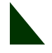

Welcome to FancyText (FT) User Guide
 fancy_text@yahoo.com
fancy_text@yahoo.com
 +234 903
956 5946
+234 903
956 5946
Hello there!
Welcome to FancyText (FT) User Guide. This manual will guide you through the basics of creating beautiful and elegant text and graphics using FT software. This guide is written in simple and straightforward English so that you can easily follow along. Please feel free to send an email or call the number above for any further enquiries or support.
About
FancyText(FT) is a free and simple software designed basically to be used to create images containing fancy (beautiful and elegant) text graphics as well as other graphics such as pictures, simple shapes such as line, circle, square, polygon, etc, complex shapes created from simple shapes and emojis. Click here to visit home page.
FancyText is a product of Aikien's Softwares Incorporated, a software company based in the city of Yenagoa in Bayelsa State, Nigeria. Click here to visit home page.
Editing
Add Graphics
Text
To add a new text graphics to the Graphics Display Pane (GDP), click on the text input area and type your text. Next, click on the icon in the toolbar or Add menu to add the text to the GDP. Alternatively, you can press Ctrl + Enter after typing your text into the text area.
Image
To add a new picture to the GDP, click on the icon in the toolbar or Add menu. This will open a file explorer window where you can navigate to the picture you want to insert. Alternatively, you can press Ctrl + Shift + Enter to open the file explorer window.
Arrow
To add a new arrow shape to the GDP, click on the  icon in the toolbar or simple shape submenu in the Add menu. Alternatively, you can press
Ctrl + Shift + A.
icon in the toolbar or simple shape submenu in the Add menu. Alternatively, you can press
Ctrl + Shift + A.
Line
To add a new line shape to the GDP, click on the icon in the toolbar or simple shape submenu in the Add menu. Alternatively, you can press Ctrl + Shift + L.
Arc
To add a new arc shape to the GDP, click on the icon in the toolbar or simple shape submenu in the Add menu. Alternatively, you can press Ctrl + Shift + K.
Ellipse
To add a new ellipse shape to the GDP, click on the icon in the toolbar or simple shape submenu in the Add menu. Alternatively, you can press Ctrl + Shift + E.
Circle
To add a new circle shape to the GDP, click on the icon in the toolbar or simple shape submenu in the Add menu. Alternatively, you can press Ctrl + Shift + C.
Rectangle
To add a new rectangle shape to the GDP, click on the icon in the toolbar or simple shape submenu in the Add menu. Alternatively, you can press Ctrl + Shift + R
Regular Polygon
To add a new regular polygon shape to the GDP, click on the icon in the toolbar or simple shape submenu in the Add menu. Alternatively, you can press Ctrl + Shift + P.
Star Polygon
To add a new star polygon shape to the GDP, click on the icon in the toolbar or simple shape submenu in the Add menu. Alternatively, you can press Ctrl + Alt + P
Right-angle Triangle
To add a new right-angle triangle shape to the GDP, click on the  icon in the toolbar or simple shape submenu in the Add menu. Alternatively, you can press Ctrl + Shift + T.
Add Emoji
To add emoji(s), click on the  icon in
the toolbar or Add menu.
Alternatively, you can press Ctrl + Alt + E. This will bring up a dialog window
containing
several emojis and icons. Click on an emoji or icon to add it to the GDP.
icon in
the toolbar or Add menu.
Alternatively, you can press Ctrl + Alt + E. This will bring up a dialog window
containing
several emojis and icons. Click on an emoji or icon to add it to the GDP.
Relocate Graphics
To relocate graphic object, that is move it to a different position on the GDP, move the mouse pointer to the location (position) of the graphics object then hold down the primary mouse button and drag the mouse to relocate the graphic object.
Style and Appearance
To change the style, appearance or dimension of a graphic object double click on the object to highlight it, then adjust the properties from the buttons and controls in the toolbar or via the edit menu. Hover over the icons and controls on the toolbar to get hint about their functions.
Delete/Clear Graphics
To delete a graphic object, double click on the object to highlight it then click on the icon on the toolbar or the Delete menu. Alternatively, you can simply press Ctrl + D or only the Delete button on the keyboard to remove the object after double clicking on it to highlight it. To clear the GDP, that is remove all the graphics objects click on the icon on the toolbar or Delete menu. Alternatively, you can press Ctrl + Alt + D or Alt + Delete on the keyboard.
Z-order Repositioning
Z-order (or Z-axis) repositioning refers to changing the z-position of a graphic object on the GDP. That is how the graphics object are stacked on each other in the z-axis. As you add the graphic objects to the GDP the more recent ones are placed over the the older ones. You can re-order the graphic objects as follows:
Bring Forward
To bring a graphic object one step forward in the z-ordering, double click on the graphic object to highlight it, then right click on the GDP. This will bring up a pop-up menu, click on the icon. Alternatively, you can go to the Position submenu, in the Edit menu to access the icon or simply press Ctr + shift + F after highlighting the object.
Bring To Front
To bring a graphic object to the front, i.e. first position in the z-ordering, double click on the graphic object to highlight it, then right click on the GDP. This will bring up a pop-up menu, click on the icon. Alternatively, you can go to the Position submenu, in the Edit menu to access the icon or simply press Ctr + Alt + F after highlighting the object.
Send Backward
To send a graphic object one step backward in the z-ordering, double click on the graphic object to highlight it, then right click on the GDP. This will bring up a pop-up menu, click on the icon. Alternatively, you can go to the Position submenu, in the Edit menu to access the icon or simply press Ctr + shift + B after highlighting the object.
Send To Back
To send a graphic object to the back, i.e. last position in the z-ordering, double click on the graphic object to highlight it, then right click on the GDP. This will bring up a pop-up menu, click on the icon. Alternatively, you can go to the Position submenu, in the Edit menu to access the icon or simply press Ctr + Alt + B after highlighting the object.
File
New File
A new file is created by default anytime you start the application. However to manually create a new file click on the icon in the toolbar or File menu. Alternatively, you can press Ctrl + N.
Open File
To open an existing file, click on the icon on the toolbar or file menu. Alternatively, you can press Ctrl + O. This will popup a file explorer window where you can navigate to the folder where the file you want to open is saved. When you have found the file double click on the file or click on the file and then click the OK button at the bottom of the file explorer window.
Append File
To append an existing file, click on the icon on the toolbar or file menu. Alternatively, you can press Ctrl + A. This will popup a file explorer window where you can navigate to the folder where the file you want to append is saved. When you have found the file double click on the file or click on the file and then click the "OK" button at the bottom of the file explorer window. PLEASE NOTE: appending a file will add all the graphics objects in the file been appended besides the background fill to the currently open or visible file (tab). The positions of the graphics objects that was added will be the same as in the original or source file.
Save Image
To save a snapshot of your GDP, click on the icon on the toolbar or file memu. Alternatively, you can press Alt + S. This will pop-up a dialog where you can select your preferred image format. After selecting your preferred image format click on the OK button. This will then open a file explorer window where you can change the name of the file as well as the folder to save the file. (Make sure that the file name always ends with proper file extension. For example if you select the "PNG" file format, then the name of the file MUST end with ".png".
Save
To save the most recent changes to the current viible file, click on the icon on the toolbar or file menu. Alternatively, you can simply press Ctrl + S. If the file has not been saved to the disk yet, a file explorer window will popup where you can change the name of the file as well as the folder you want to save the file. NOTE: Please ensure that the file name always ends with the extention ".fte".
Save As
To save the current visible file to the disk click on the, icon in the file menu. Alternatively, you can simply press Ctrl + Alt + S. This will take you to a file explorer window where you can change the name of the file as well as the folder you want the file to be saved. NOTE: Make sure that the file name always ends with the extention ".fte".
Save All
To save all open files to the disk, click on the, icon on the toolbar or file menu. Alternatively, you can simply press Ctrl + shift + S. This will automatically save the most recent changes in all the files to the disk one after the other. If any file has not yet been saved to the disk, a file explorer window will popup where you can change the name of the file as well as the folder where you want the file to be saved. NOTE: Make sure that the file name always ends with the extention ".fte".
Close
To close a tab click on the tab in the tab pane, then click on the X icon on the tab to
close it
or simply press Alt + X. Alternatively, you can right click anywhere on the GDP to bring
up a pop-up
menu. Click on the  icon in the
pop-up menu
to close the tab. You can also find the close icon in the file menu in the menu bar.
icon in the
pop-up menu
to close the tab. You can also find the close icon in the file menu in the menu bar.
Close All
To close all the currently open tabs in the tab pane, right click anywhere on the GDP of any active or visible tab to bring up a pop-up menu. Click on the icon in the pop-up menu to close all tabs or simple press Ctrl + Alt + X. You can also find the "Close All" icon in the file menu in the menu bar. Please note: after all tabs are closed a new empty file will automatically be created.
Exit
To exit the application click on the X icon on the main window or go to the File menu in the menu bar and click on Exit.
Conclusion
Congratulations on going through this beginers guide on how to use FancyText. Please note, this is just a brief introduction on how to use the software. Please take time to explore the software to uncover it's subtleties and advanced functionalities in order for you to maximise the full potential of the software.

Copyright(C) 2020. Aikien Softwares, Inc. All rights reserved.